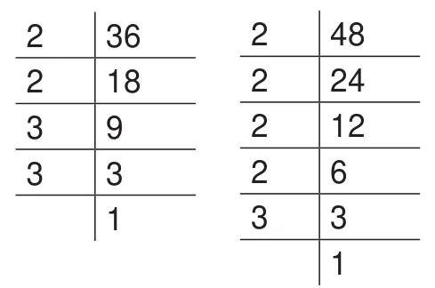
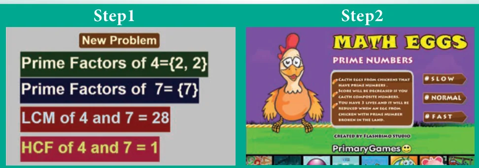

Let us find the HCF and the LCM of 36 and 48. First, find the factors of 36 and 48 using division method.

\(36 = 2 \times 2 \times 3 \times 3; \qquad 48 = 2 \times 2 \times 2 \times 2 \times 3\)
\(\text{HCF} = 2 \times 2 \times 3 = 12\)
\(\text{LCM} = 2 \times 2 \times 3 \times 2 \times 2 \times 3 = 144\)
Observe that, \(36 \times 48 = 144 \times 12 = 1728\)
We find that,
product of two given numbers \(=\) their HCF \(\times\) LCM
In general, for any 2 numbers \(x\) and \(y\),
\(x \times y = \text{HCF}\,(x, y) \times \text{LCM}\,(x, y)\)
Example 12: The LCM of two numbers is 432 and their HCF is 36. If one of the numbers is 108, then find the other number.
Solution: We know that, the product of the two numbers \(= \text{LCM} \times \text{HCF}\)
\(108 \times (\text{the other number}) = 432 \times 36\)
\(\text{The other number} = (432 \times 36) \div 108 = 144\)
Example 13: The LCM of two co-prime numbers is 5005. If one of the numbers is 65, then find the other number.
Solution: We know that, the product of the two numbers \(= \text{LCM} \times \text{HCF}\)
As the HCF of co-primes is 1,
\(65 \times (\text{the other number}) = 5005 \times 1\)
\(\text{The other number} = 5005 \div 65 = 77\)
NUMBERS ICT CORNER
Expected Outcome
Step 1
Open the Browser and type the URL Link given below (or) Scan the QR Code. GeoGebra work sheet named "Numbers" will open. The work sheet contains two activities. 1. LCM and HCF and 2. Prime number game.
In the first activity Click on New Problem and solve the problem, then check your answer.
Step 2
In the second activity catch the egg which shows prime number as quick as possible. You can select the level of speed in the beginning.

Browse in the link:
Numbers: https://ggbm.at/Exu3mtz5 or Scan the QR Code.